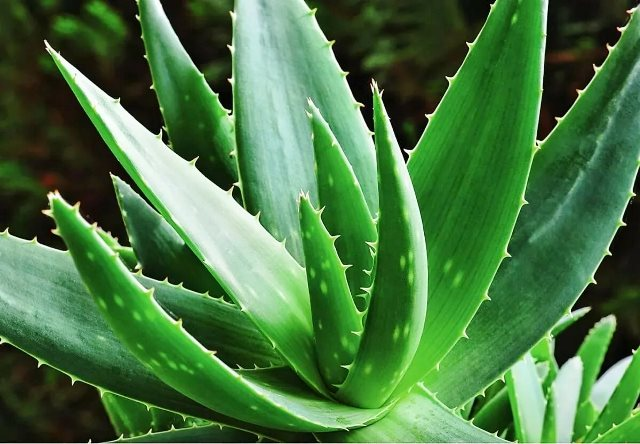

Уход и проблемы выращивания
Уход за алоэ в домашних условиях заключается в следующем:

- растение необходимо обеспечить нужным ему освещением. Оно очень любит яркий свет, поэтому горшок с цветком помещают на южный или юго-восточный подоконник,
о так, чтобы избегать прямого солнечного света. Зимой целесообразно использовать искусственное освещение;
- нужно соблюдать температурный режим. В летнее время цветок растёт при комнатной температуре, а зимой, когда алоэ находится в состоянии покоя,
ему необходимо обеспечить температуру не выше +14 градусов. Летом растение выносят на свежий воздух;
- поливать суккулент необходимо по мере пересыхания почвы в горшке. Для поливов используют отстоявшуюся воду комнатной температуры. Поливают строго под корень.
Зимой количество поливов уменьшают;
- цветок требует подкормок. Удобрения вносят с начала весны до конца осени. Затем подкормки прекращают. В качестве удобрения используют покупные составы для комнатных растений;
- чтобы растение всегда радовало глаз, один раз 3-4 года алоэ необходимо пересаживать в более просторный горшок.
На дно горшка помещается дренаж, затем цветок аккуратно достают из старого горшка, стряхивают с корней землю и опускают в горшок. Затем засыпают землёй и поливают.